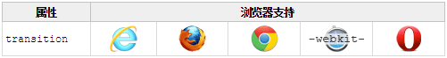

通过 CSS3，我们可以在不使用 Flash 动画或 JavaScript 的情况下，当元素从一种样式变换为另一种样式时为元素添加效果
请把鼠标移动到右侧的元素上
Internet Explorer 10、Firefox、Chrome 以及 Opera 支持 transition 属性
Safari 需要前缀 -webkit-
注释：Internet Explorer 9 以及更早的版本，不支持 transition 属性
注释：Chrome 25 以及更早的版本，需要前缀 -webkit-